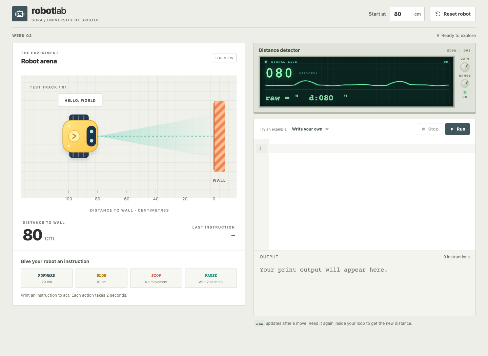

Strings, branches and loops
Software Development: Programming and Algorithms
Dr Joseph Aylett-Bullock
FAQs
- Single and double quotation marks
print()statements with different types- Binary number storage
Space for questions from last week.
Overview and reading
Software Development: Programming and Algorithms
This week:
- Strings, methods and slices
- Conditional statements and indentation
while,for,range,breakandcontinue
The robot example connects these ideas.

Ch. 5, §7.1

§5.4, §§7.3–7.4
§§8.1, 8.5

§§2.2, 2.4
Strings and operators
Terminal
Robot Lab
The robot begins 80 cm from the wall. The detector supplies raw, a string such as " d:080 ".
print("FORWARD") moves the robot 20 cm.

String methods
VS Code/IDE
Positions and slices
| Character | P |
Y |
T |
H |
O |
N |
|---|---|---|---|---|---|---|
| Index | 0 | 1 | 2 | 3 | 4 | 5 |
| Negative index | −6 | −5 | −4 | −3 | −2 | −1 |
s[start:stop:step] includes start, excludes stop and defaults to a step of 1.
Slicing exercise
Drag tiles into the brackets. Predict before pressing Slice.
For s = "PYTHON", what is s[:3]? A PYT B PYTH C YTH D error
Strings are immutable
VS Code/IDE
How do I remove the outside spaces and format the name properly in the fewest steps?
VS Code/IDE
Robot Lab: extracting the distance
The detector supplies a string such as " d:080 ".
How do we extract the distance as an int and set it to distance_cm?
One conditional block
VS Code/IDE
A chain chooses at most one branch
VS Code/IDE
Multiple if statements
distance_cm = 20
if distance_cm <= 20:
print("STOP")
if distance_cm <= 50:
print("SLOW")
print("Done")A STOP, Done B SLOW, Done C STOP, SLOW, Done
C. Each if starts a separate decision. Indentation decides which statements belong to a block.
Nested decisions
VS Code/IDE
while loop
VS Code/IDE
A stale reading
raw = " d:080 "
message = raw.strip()
distance_cm = int(message[2:])
while distance_cm > 20:
print("FORWARD")What happens next? A Stops at 20 B Keeps printing FORWARD C Does not print
B. distance_cm still contains 80. In Robot Lab, read and convert the supplied raw after each move; do not overwrite it with a fixed string.
Repetition with keyboard input
VS Code/IDE
for loops and range
VS Code/IDE
Reassigning the variable in the loop
A 0, 1, 2, 3 B 0, 1, 2, 3, 4 C Never finishes
A. Changing x does not rebuild the existing range for this loop.
break and continue
VS Code/IDE
Robot Lab: a route string
Reset to 80 cm. Build a for loop for "FFPFSFF".
F means FORWARD. S means STOP and break. P means PAUSE and continue.
Final distance: A 0 B 20 C 40 D 60 cm
B. Three moves, one pause, then STOP. The final two Fs are skipped.
break in the innermost loop
VS Code/IDE
References
- Python Crash Course, 2nd ed., Eric Matthes: chapter 5 and §7.1.
- Think Python, Allen B. Downey: §5.4, §§7.3–7.4, §§8.1 and 8.5, using the course edition.
- Introduction to Computation and Programming Using Python, 2nd ed., John V. Guttag: §§2.2 and 2.4.
The following two slides collect additional examples for reference.
Reference: string methods
Strings are immutable. Methods return values; assignment chooses what a name refers to. len() counts Unicode code points, which need not equal the number of visible symbols.
Reference: looping approaches
Direct iteration is usually clearest when only the character matters. A while counter needs an explicit update.
bristol.ac.uk